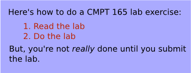

This lab is designed to get you working more with XHTML and to get you started with CSS.
-
Save this empty XHTML page as a starting point for your work on this lab. (Again, don't use Internet Explorer for this.) Open it in a text editor. You will need some content for the file. Have a look at the following short set of instructions—we will create a web page containing these instructions.
Figure 1: Content for the page -
As usual, start by filling in the
<title>and add an<h1>that both contain the same title. (Make up a reasonable title for such a page.) -
Now, fill in the rest of the content, as seen in the figure above. As always, you don't have to worry about the appearance in the XHTML (or where the line breaks are): just pick tags that correspond to the type of content.
For example, the first words on the page are (part of) a paragraph, so they should go in a
<p>. You should have a look through the XHTML reference as you're doing this.In particular, look at the reference pages for
<ol>(and the<li>s that it contains) and<em>for the emphasized word in the last sentence. -
Open the XHTML page in your browser. It won't look like the figure above, but someone reading it should get the same information. That's all we're concerned about in the XHTML.
-
Save this sample CSS file in the same directory as the XHTML file you have been working on. Add this inside the
<head>of your XHTML file, so it uses the stylesheet:<link rel="stylesheet" href="lab2-style.css" type="text/css" /> -
Reload the page in your browser. It should now look much more like the figure above.
-
Modify the stylesheet so that the
<h1>has…- a black background (colour code
#000) - a light blue text colour, to match the background colour (colour code
#aaf).
- a black background (colour code
-
On the course web server, create a directory
lab2in yourpublic_htmldirectory.Upload both the
.htmland.cssfiles to thelab2directory you just created. Check to make sure that the page works on the server and still looks the same. The URL will be something like:http://cmpt165.csil.sfu.ca/~userid/lab2/lab2.htmlRemember that URLs are case sensitive. So, whether you named the directory
lab2orLab2(and your filelab2.htmlorLab2.html) matters.We suggest you organize your files this way throughout the course: create a new directory for each lab exercise and assignment.
When you're done, submit the URL of the page (that you visited in the last step) to CourSys.